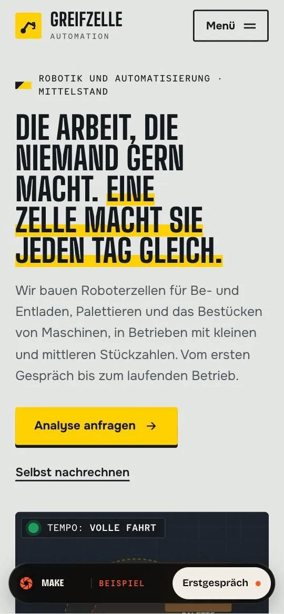

Beispiel · erfundener Betrieb
Website für Robotik und Automatisierung erstellen lassen: die Beispielseite Greifzelle Automation
Wer Automatisierung einkauft, will die Technik begreifen, bevor er mit dem Vertrieb spricht. Wenn Sie als Anbieter von Robotik und Automatisierung eine Website erstellen lassen möchten, zeigt diese Beispielseite für einen erfundenen Betrieb, wie eine gezeichnete Zelle und ein Rechner das erklären.
Ein Anbieter von Roboterzellen für den Mittelstand, der die Technik begreifbar macht: Man bedient eine gezeichnete Zelle, stellt die Aufgabe um, schickt eine Person in den Arbeitsbereich und sieht, wie der Arm bremst. Dazu ein Rechner, der nur mit den eigenen Zahlen der Besucher rechnet.

Welche Aufgabe löst die Seite?
Wer Roboter für den Mittelstand verkauft, hat Kunden, die Kosten, Sicherheit und Personal fürchten. Die Seite lässt sie eine Zelle selbst bedienen, rechnet mit ihren eigenen Zahlen statt mit Versprechen und führt über Analyse, Pilot und Ausbau zu einer Anfrage.
Was enthält die Seite?
- Zelle zum Bedienen
- Rechner mit eigenen Zahlen
- Miete oder Leasing
Betongrau, Stahl und Warngelb, gesetzt in einer schmalen Versalienschrift wie auf Maschinenschildern. Der Einstieg ist eine gezeichnete Roboterzelle von oben: Besucher wechseln zwischen Palettieren und Maschine bestücken, fahren den Durchgang Schritt für Schritt durch und schicken eine Person in den Bereich, worauf der Arm langsamer wird und anhält. Es folgen drei Einsatzfelder, ein Rechner für die eigenen Zahlen, der Weg über Analyse, Pilot und Ausbau mit Miete oder Leasing als Einstieg, Sicherheit und Nachweise mit Feldern für die Einträge, fünf Fragen und die Anfrage. Alle Bilder sind gezeichnete Illustrationen.
Wie jede unserer Seiten ist sie zuerst für das Handy gestaltet und lädt schnell.
Für wen passt so eine Seite?
Für Anbieter von Automatisierung, Maschinen und Anlagentechnik, die erklärungsbedürftige Investitionsgüter an Betriebe verkaufen und dafür Vertrauen und Verständnis aufbauen müssen.
Häufige Fragen zur Website für Robotik und Automatisierung
Wie erklärt eine Website, was ein Cobot insgesamt kostet?
Mit einem Rechner für die eigenen Zahlen. Die Beispielseite Greifzelle Automation nennt selbst keine erfundenen Preise und lässt Besucher mit ihren Werten rechnen.
Wie zeigt man, wie eine Roboterzelle arbeitet?
Mit einer gezeichneten Zelle von oben. Besucher wechseln zwischen Palettieren und Maschine bestücken und fahren den Durchgang Schritt für Schritt durch.
Wie wird Sicherheit bei der Zusammenarbeit mit Menschen gezeigt?
In der Zelle: Schickt der Besucher eine Person in den Bereich, wird der Arm langsamer und hält an. Dazu gibt es einen Abschnitt zu Sicherheit und Nachweisen mit Feldern für Ihre Einträge.
Wie wird der Einstieg für Betriebe ohne Fachpersonal erklärt?
Als Weg über Analyse, Pilot und Ausbau. Die Beispielseite nennt Miete oder Leasing als Einstieg. Was bei Ihnen gilt, legen Sie fest.
Welche Einsatzfelder gehören auf die Seite?
Die, für die Sie Lösungen anbieten, als eigene Felder mit Beispielen. Die Beispielseite zeigt drei Einsatzfelder und führt zur Analyse-Anfrage.
Wie entsteht Ihre eigene Seite?
In sechs Schritten: Briefing, Design, Feedback, Umsetzung, Abnahme, Live. Sie sehen den Entwurf, bevor wir bauen, und online geht die Seite erst mit Ihrem Okay. Zum Ablauf
Websites gibt es ab 2.990 € netto, einmalig. Alle Preise finden Sie bei MAKE Innovation: Alle Preise. Mehr zu Video und Reels und zu Social Media steht auf der Startseite.
Stand: November 2026